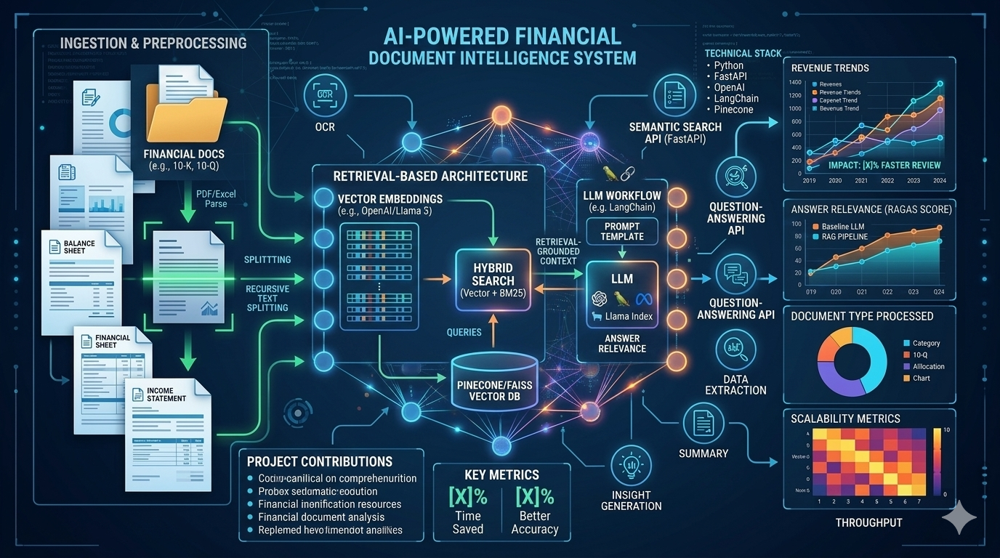

GenAI Financial Document Intelligence Platform
AI Project • 2025
Built a prototype AI-powered document analysis system for financial documents using NLP, retrieval, and LLM-based workflows to support faster information extraction and question answering.
Contributions
- Designed a retrieval-based architecture for financial document analysis
- Built ingestion and preprocessing flows for unstructured document content
- Implemented semantic search and question-answering APIs using FastAPI
- Worked with embeddings and LLM workflows to improve contextual retrieval
Impact
- Demonstrated faster document review and insight extraction in prototype workflows
- Improved answer relevance using retrieval-grounded responses
- Enabled question answering across complex financial documents
- Created a foundation for scalable AI-based document analysis
Python
FastAPI
NLP
RAG
Embeddings
Semantic Search